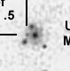
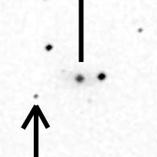

{kind=link}


{kind=link}
{kind=link}
{kind=link}


{kind=link}


{kind=link}


BCG
compact


{kind=link}

{kind=link}


{kind=link}
{kind=link}


Click in the header to sort the SNe based on this criterion
A small and red square means that there is available spectrum in SDSS
List of Selected SNe
| HOST ID | HOST TYPE | RA | DEC | z | SN ID | type | R (arcsec) | R (kpc) | (BEST ?) SN IMG | HOST SDSS IMG | FACE-ON (?) | More IMG... |
| UGC 12133 | Sc | 339.8833 | 8.6131 | 0.025 | 1998eg | Ia | 36.069378 | 18.877587 | |
NO | ... | |
| UGC 607 | Scd | 14.6875 | 12.7483 | 0.0391 | 1999ef | Ia | 19.235384 | 15.915149 |  | YES | ... | |
| IC 1468 | S0 | 346.2833 | -3.2044 | 0.032 | 2000dn | Ia | 30.016662 | 20.216592 | |
|
? | ... |
| NGC 3987 | Sb | 179.3333 | 25.1953 | 0.015 | 2001V | Ia | 59.059292 | 18.402699 | NO | ... | ||
| UGC 621 | Sbc | 167.6250 | 55.1697 | 0.058 | 2001ah | Ia-pec | 32.249031 | 40.140928 | YES | ... | ||
| UGC 8399 | Sb | 200.4375 | 31.2372 | 0.024 | 2001cj | Ia | 35.902646 | 18.024826 | |
YES | ... | |
| UGC 10738 | Sbc | 257.7708 | 5.8522 | 0.022 | 2001cp | Ia | 63.253458 | 29.064982 | |
NO SDSS IMAGE | NO | ... |
| UGC 1162 | Sb | 24.5625 | 41.6539 | 0.037 | 2001eh | Ia | 36.496575 | 28.529752 | |
NO SDSS IMAGE | YES | ... |
| MCG +06-6-12 | Sb | 34.5750 | 37.4644 | 0.038 | 2002hu | Ia | 32.128648 | 25.813597 | |
NO SDSS IMAGE | ? | ... |
| NGC 477 | Sc | 20.3333 | 40.4986 | 0.020 | 2002jy | Ia | 58.940648 | 24.583053 | YES | ... | ||
| NGC 3978 | Sbc | 179.0417 | 60.5225 | 0.033 | 2003cq | Ia | 32.062439 | 22.286235 | |
YES | ... | |
| MCG +7-36-33 | Sb | 266.0375 | 40.8672 | 0.039 | 2003fa | Ia | 50.009999 | 41.268795 | |
NO SDSS IMAGE | ? | ... |
| NGC 6928 | Sab | 308.2083 | 9.9264 | 0.016 | 2004eo | Ia | 59.413803 | 19.762783 | |
NO SDSS IMAGE | ? | ... |
| MCG +02-23-027 | S? | 136.2083 | 13.5619 | 0.028483 | 2005F | Ia | 53.851648 | 32.197255 | YES | ... | ||
| MCG -01-9-6 | Scd | 47.2000 | -7.0406 | 0.029 | 2005eq | Ia | 30.528675 | 18.591171 | |
|
? | ... |
| UGC 2413 | cD BCG compact | 44.1208 | 15.9158 | 0.03457 | 2005et | Ia | 79.215213 | 57.750051 | |
NO SDSS IMAGE | ? | ... |
| UGC 4614 | S0a | 132.3167 | 36.1197 | 0.026 | 2005ms | Ia | 50.076442 | 27.277752 | |
YES | ... | |
| NGC 3663 | SA(rs)bc | 171.0000 | -12.2953 | 0.0168 | 2006ax | Ia | 54.399449 | 19.011448 | NO SDSS IMAGE | YES | ... | |
| CGCG 108-013 | S0a | 239.1403 | 20.05236 | 0.032 | 2006bt | Ia | 49.648766 | 33.439056 | |
YES | ... | |
| UGC 11758 | Sbc | 322.7375 | 13.9861 | 0.028713 | 2006ev | ? | 25.495098 | 15.369007 | NO SDSS IMAGE | NO | ... | |
| UGC 12071 | Sb | 338.1000 | 30.8356 | 0.035 | 2006gr | Ia | 33.241540 | 24.543433 | |
|
YES | ... |
| IC 1735 | Sb | 27.7167 | 33.0922 | 0.038 | 2006je | Ia-pec | 28.319605 | 22.753241 | |
YES | ... | |
| UGC 10704 | S | 255.4542 | 79.0378 | 0.064 | 2007ae | Ia | 21.282152 | 29.359200 | |
YES | ... | |
| MCG -04-38-4 | Sc | 243.2208 | -21.6233 | 0.03164 | 2007ai | Ia | 25.025187 | 16.660584 | |
NO SDSS IMAGE | YES | ... |
| NGC 4038 | Sd/Irr | 179.9875 | -19.2725 | 0.005 | 2007sr | Ia | 379.01187 | 39.058058 | NO SDSS IMAGE | YES | ... | |
| ESO 284-G32 | SB0 | 303.4833 | -44.3511 | 0.019193 | 2008ff | Ia | 39.012818 | 15.605475 |  | NO SDSS IMAGE | ? | ... |
| NGC 539 | SBc | 21.3417 | -18.1639 | 0.031993 | 2008gg | Ia | 35.946905 | 24.205517 | |
NO SDSS IMAGE | YES | ... |
| MCG -02-1-14 | SBc | 1.0042 | -11.1742 | 0.03786 | 2008hj | Ia | 20.593688 | 16.486176 | |
YES | ... | |
| MCG -03-10-052 | Sb | 58.6042 | -19.1903 | 0.02499 | 2009D | Ia | 40.447744 | 21.160457 | |
NO SDSS IMAGE | ? | ... |